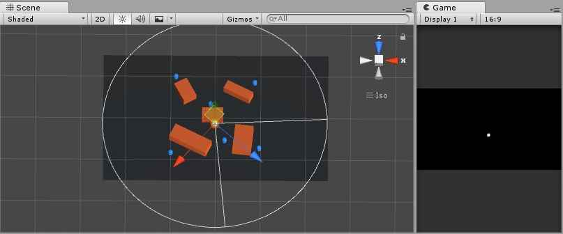

0x00
两种方法，用于调试，还是用来在游戏中显示。
0x01 测试场合
为了一些测试目的，如判断 AI 的移动路径，是否在目标的视野范围以内等等，但这些用来测试可视化的表示，我并不希望在最终的展示场景出现，而 Unity 提供了这样的用来测试的方法，通过 Debug模块，还可以通过参数设置线的可见距离，以及是否开启深度测试等：
1 | Debug.DrawLine(pos1, pos2, color); // 绘制从点 pos1 到 pos2 的一条直线 |
但是在 Debug 模块中，只能在场景视窗中绘制直线。
为了弥补这点，可以使用放在特殊文件夹 /Editor 中继承自 Editor 的代码，通过 Handles API 来自定义场景视图中的 3D GUI 以及绘制操作，参考下面一段代码，实现了图上的绘制功能。

1 | using UnityEngine; |
（小声说：嗯，Editor 的代码除了自定义 Inspector 还能画这个 Emmmm
0x02 运行时显示
在运行时有绘制线段的情景时，可以使用 LineRenderer 线渲染器来做，完全适合 3D 场景中对线段进行渲染。直接上个例子吧。
点击位置，设置为目标位置画线。
1 | void Start(){ |
画线的不同效果可以通过 shader 来实现，虚线也可以通过材质附上虚线图实现（只有虚线，透明背景，下图），但在这种变化的图中，不改变贴图位置的话有一种拉长图片的感觉，需要实时进行修改。
这里有一篇画⚪的分享，先放在这里
0xff
先这样咯。